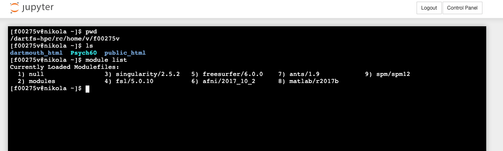

Introduction to JupyterHub
Written by Jeremy Huckins & Luke Chang
In this course we will primarily be using python to learn about fMRI data analysis. Many of the laboratories can be run on your own individual laptops once you have installed Python (preferably via an anaconda distribution. Often we will also be working with neuroimaging datasets, which can have large storage requirements. We will also occasionally be using additional software that will be called by Python (e.g., preprocessing). Finally, some of the analyses we will run can be very computationally expensive and may exceed the capabilities of your laptop. To meet these needs, Dartmouth's Research Computing has generously provided a dedicated server on their high performance computing system that will allow us to store data, access specialized software, and run analyses.
The main portal to access this resource will be through the Jupyterhub interface. This allows you to remotely login in to the server through your browser at https://jupyter.dartmouth.edu using your netid. Please let us know if you are having difficulty logging in as this might mean we need to have an account created for you.
A couple of quick notes. You will be sharing this server with your fellow classmates as well as a few other classes on campus. This server has a limited number of resources (currently 16 CPUs and 128gb of RAM). This means that we may not all be able to run our analyses at the same time or the server may slow down or possibly even crash. To be a good user, please do not leave your notebook running when you aren't using it. This can be accomplished by using the logout button when you're done rather than simply closing your laptop or browser.
Today's Goals
Connect your laptop to your personal DartFS and Psych60 DartFS space
From a terminal window ssh into jupyter.dartmouth.edu
Create link to access Psych60 data from jupyterhub
Add modules so we can use MRI-specific software on the server
Create a folder for yourself in Psych60/students_output/your_netid
Run a test notebook from your personal folder
Data Storage via DartFS
We will host most of our data and tutorials for the class on DartFS. DartFS is a file storage system that can be accessed by most computers and devices provided that you are on a campus network (or logged in via VPN). You have a home directory and the instructions below are for accessing your home space. If you are enrolled in the class you should be authorized to access the Psych 60 space. Please let us know if that is not the case. You need to be connected to Dartmouth network to access DartFS. If you are off campus, use a VPN connection.
RC Linux systems: /dartfs-hpc/rc/home/e/d12345e
RC Linux systems: /dartfs/rc/lab/P/Psych60
Mac Finder path: smb://dartfs-hpc.dartmouth.edu/rc/home/e/d12345e
Mac Finder path: smb://dartfs.dartmouth.edu/rc/lab/P/Psych60
Windows UNC path: \dartfs-hpc.dartmouth.edu\rc\home\e\d12345e
Windows UNC path: \dartfs.dartmouth.edu\rc\lab\P\Psych60
Please see the email you received to determine the location of your home directory.
Accessing Additional Software
To access addditional software beyond our class Python conda environment, we will need to set up a few things on the research computing servers. This involves remotely logging in to the server using a terminal and adding a few software modules to your environment profile.
Using a terminal window, type the following commands in your terminal window:
First, we will create a symbolic link to the course directory in your home directory.
ln –s /dartfs/rc/lab/P/Psych60 Psych60
This will allow you to access the course folder after logging into jupyterhub.
Second, we will create a directory namked with your netid in the students_output folder.
cd Psych60/students_output
mkdir your_netid [where "your_netid" is your netid]Third, we will add additional software packages to be available to us on jupyterhub by adding specific modules
module initadd fsl
module initadd freesurfer
module initadd afni
module initadd ants
module initadd spmIntroduction to Jupyter Notebooks
Jupyter notebooks are a great way to have your code, comments and results show up inline in a web browser. Work for this class will be done in Jupyter notebooks so you can reference what you have done, see the results and someone else could redo it in the future, similar to a typical lab notebook.
Rather than writing and re-writing an entire program, you can write lines of code and run them one at a time. Then, if you need to make a change, you can go back and make your edit and rerun the program again, all in the same window. In our specific case, we are going to use JupyterHub which lets several people access the same computer and data at the same time through a web browser.
Finally, you can view examples and share your work with the world very easily through nbviewer. One easy trick if you use a cloud storage service like dropbox is to paste a link to the dropbox file in nbviewer. These links will persist as long as the file remains being shared via dropbox.
Using Jupyter Notebooks on a server hosted by Dartmouth
If you use our server, all analyses you run will be performed on a server deep in the basement of a building on campus. This is great because you can start an analysis and let it run, checking in on the the results later by reconnecting to the server and opening the notebook you were running. The downside of this setup is that you will be sharing processing power with others, which may lead to some forced coffee breaks.
Log in with your netid and it should bring you to your home DartFS space. Again, don't forget to logout when you are done running your analysis.
Try Using the Terminal
Click on New and then Terminal to bring up a terminal window. It should look like this:

Type the commands into your terminal:
pwd, ls, module list
The result should look like this:

Next click the Running tab and and click on Shutdown next to terminal. This is how we close sessions that we are finished with.

Opening a notebook on the server
Click on Files, then the Psych60 link you created, then navigate to nipype_tutorial/notebooks and click on introduction_jupyter-notebook.ipynb
This will be the first notebook we will work with today. Save this into your folder in students_output before running anything (File, Save As)
Now work through this sample notebook.
When you are finished, click on the Running tab in the main jupyter window and then the Shutdown button to shutdown the notebook. Close the notebook window and then click on the logout button.
Alternative
If you use jupyter notebooks on your own computer then you own computer will be doing the processing. If you put your computer to sleep then processing will stop. It will also likely slow down other programs you are using on your computer. I would recommend installing it on your own computer so you can learn more about how to use it, or if you are interested in tinkering with the software or you happen to have a particularly fast/newer computer.
Please contact Professor Huckins/Chang if you want any assistance doing this.
Installing Jupyter Notebooks on your own computer
- Install python. We recommend using the Acaconda Distribution) as it comes with most of the relevant scientific computing packages we will be using. Be sure to download Python 3.
Alternative 1: Install jupyter notebook (it comes with Anaconda)
pip install jupyterAlternative 2: If you already have python installed:
pip install --upgrade pippip install jupyterStarting Jupter Notebooks on your computer
Open a terminal, navigate to the directory you want to work from then type jupyter notebook or jupyter lab
Accessing Jupyter Hub and Course Resources from Off-Campus
If you are having difficulty logging in to the server or accessing dartfs off campus, we recommend accessing the Dartmouth network via VPN. The current method is to use Duo and authenticate your login using a mobile device.
Here are detailed instructions for how to setup VPN on your laptop.
Plotting and Atlases
For most of our labs we will be using Python to plot our data and results. However, it is often useful to have a more interactive experience. We recommend additionally downloading FSLeyes, which is a standalone image viewer developed by FSL. It can be installed by either downloading directly from the website, or using pip.
pip install fsleyes
If you are using a mac, you will likely also need to add an X11 window system such as xQuartz for the viewer to work properly.